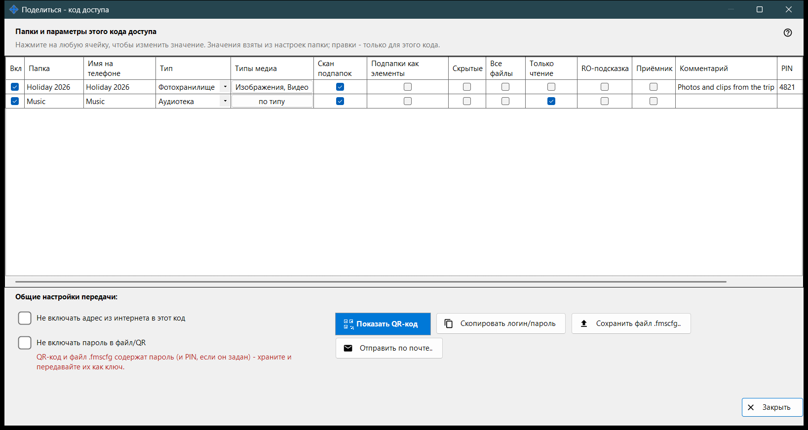
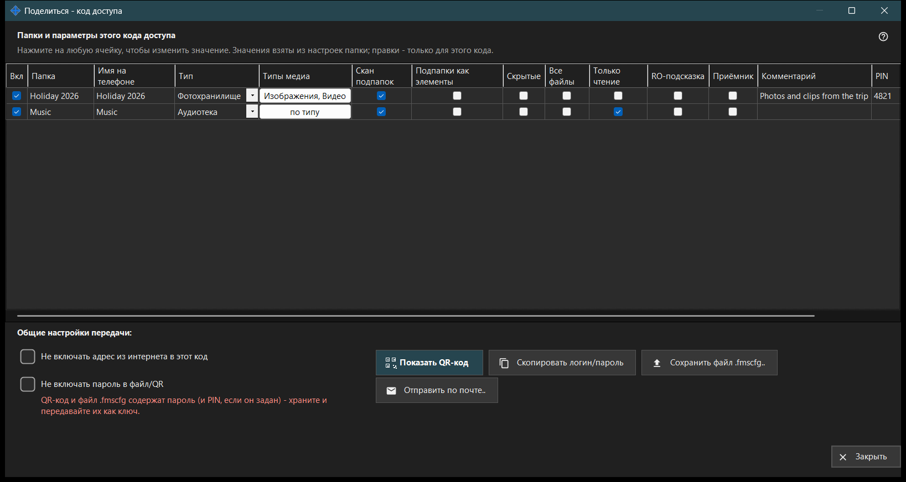

Поделиться - код доступа
Назначение
Собирает код доступа для телефона: QR-код и файл .fmscfg с адресом, логином и выбранными папками. Окно открывается кнопкой «Поделиться» главного окна при включённой раздаче и перед выдачей кода проверяет, что телефон действительно достанет до ПК.


Порядок действий
- Отметьте папки, которые войдут в код.
- Измените в таблице ячейки, которые для этого кода должны отличаться.
- При необходимости отметьте «Не включать адрес из интернета в этот код» или «Не включать пароль в файл/QR».
- Дождитесь проверки доступа.
- Покажите QR-код, сохраните файл .fmscfg, отправьте его по почте или скопируйте логин и пароль.
Элементы окна
Папки и параметры этого кода доступа
Одна строка на раздаваемую папку, столбцы «Вкл», «Папка», «Имя на телефоне», «Тип», «Типы медиа», «Скан подпапок», «Подпапки как элементы», «Скрытые», «Только чтение», «RO-подсказка», «Приёмник», «Комментарий», «PIN» и «Слайд-шоу, сек». Щёлкните ячейку, чтобы изменить значение. Сам PIN не показывается: галочка значит, что он задан, а щелчок открывает скрытое поле, где его можно задать, изменить или убрать. Значения берутся из настроек каждой папки, а правки действуют только в этом коде. «Только чтение» - настоящая блокировка на сервере, «RO-подсказка» лишь прячет в приложении кнопки правки. Папка-приёмник всегда доступна на запись, поэтому «Только чтение» к ней не применяется.
Общие настройки передачи
«Не включать адрес из интернета в этот код» заставляет телефон подключаться только по локальной сети; сервер при этом не выключается, а доступ из интернета для всей раздачи закрывается в настройках менеджера. «Не включать пароль в файл/QR» убирает пароль из кода, передайте его отдельно. Примет ли телефон код без пароля, зависит от версии приложения.
Проверка доступа
Пока состояние запрашивается, окно сообщает об этом. Если сервер не запущен, не отмечена ни одна папка или нет подходящего адреса, подсказка говорит, чего не хватает. Если проверка не завершилась, код и файл не выдаются: нажмите «Проверить доступ снова».
Показать QR-код
QR-код и файл .fmscfg открывают доступ к папкам и содержат пароль и PIN, если он задан, - храните и передавайте их как ключ. Если настроек слишком много для QR-кода, сохраните файл и отправьте его.
Файл, почта и логин
«Сохранить файл .fmscfg..» записывает файл; на файловой системе без ограничения доступа или в папке, которую могут менять другие, окно откажет, потому что в файле лежит ключ доступа. «Отправить по почте..» прикладывает файл с напоминанием импортировать его в приложении для Android и затем удалить. «Скопировать логин/пароль» кладёт оба значения в буфер обмена.
Настройки менеджера · Настройки общего доступа SFTP · Настройки сервера обмена